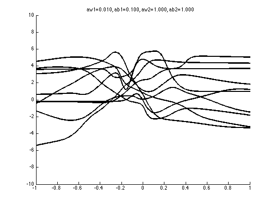
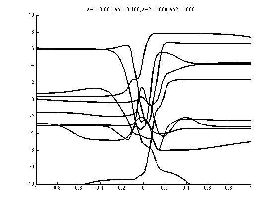
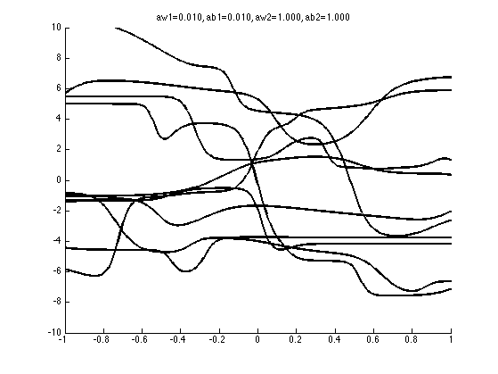
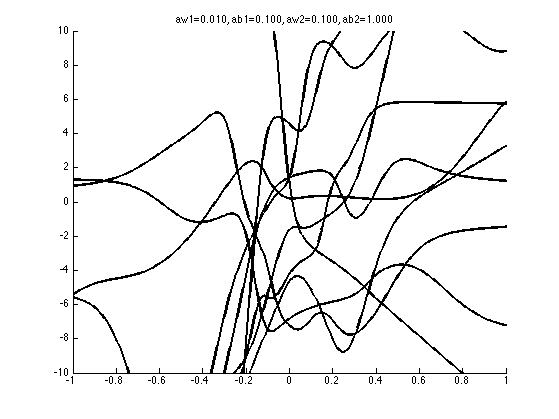
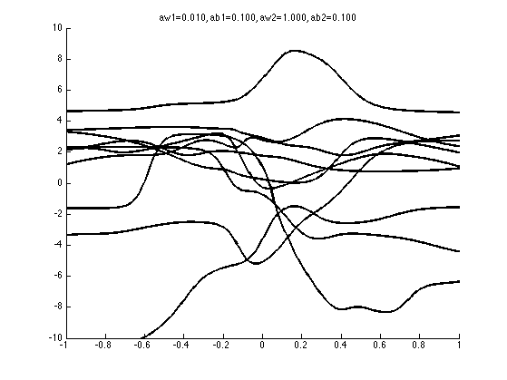

Demonstrate the effect of changing the hyper-parameters for an MLP
based on demprior from netlab, but without the GUI code
% This file is from pmtk3.googlecode.com setSeed(1); if 0 % values from Bishop p260 - clearly not correct aw1s = [1 1 1000 1000]; ab1s = [1 1 100 1000]; aw2s = [1 10 1 1]; ab2s = [1 1 1 1]; end params0 = [0.01 0.1 1 1]; % aw1 ab1 aw2 ab2 % params(trial, param number) params = repmat(params0, 5, 1); params(2,1) = params0(1)/10; params(3,2) = params0(2)/10; params(4,3) = params0(3)/10; params(5,4) = params0(4)/10; W1big = []; B1big = []; W2big = []; B2big = []; ntrials = size(params,1); for t=1:ntrials %aw1 = aw1s(t); ab1 = ab1s(t); aw2 = aw2s(t); ab2 = ab2s(t); aw1 = params(t, 1); ab1 = params(t,2); aw2 = params(t,3); ab2 = params(t,4); nhidden = 12; prior = mlpprior(1, nhidden, 1, aw1, ab1, aw2, ab2); xvals = -1:0.005:1; nsample = 10; % Number of samples from prior. figure hold on axis([-1 1 -10 10]); net = mlp(1, nhidden, 1, 'linear', prior); for i = 1:nsample net = mlpinit(net, prior); yvals = mlpfwd(net, xvals'); plot(xvals', yvals, 'k', 'linewidth', 2); W1(i,:) = net.w1; B1(i,:) = net.b1; W2(i,:) = net.w2'; B2(i) = net.b2; %M(i,:) = [net.w1 0 net.b1 0 net.w2' 0 net.b2]; end pad = zeros(5, 12); pad1 = zeros(1,5); W1big = [W1big; pad; W1]; B1big = [B1big; pad; B1]; W2big = [W2big; pad; W2]; B2big = [B2big pad1 B2]; W1mean(t) = mean(W1(:)); B1mean(t) = mean(B1(:)); W2mean(t) = mean(W2(:)); B2mean(t) = mean(B2(:)); ttl{t} = sprintf('aw1=%5.3f, ab1=%5.3f, aw2=%5.3f, ab2=%5.3f', ... aw1, ab1, aw2, ab2); title(ttl{t}) printPmtkFigure(sprintf('mlpPriorsDemo%d', t)) end if 0 figure; imagesc(W1big); colorbar; title('W1') figure; imagesc(B1big); colorbar; title('b1') figure; imagesc(W2big); colorbar; title('W2') figure; imagesc(B2big'); colorbar; title('b2') figure;hold on plot(W1mean, '-ro'); plot(B1mean, ':gd'); plot(W2mean, '-.bs'); plot(B2mean, '--k*'); legend('W1', 'B1', 'W2', 'B2') end    